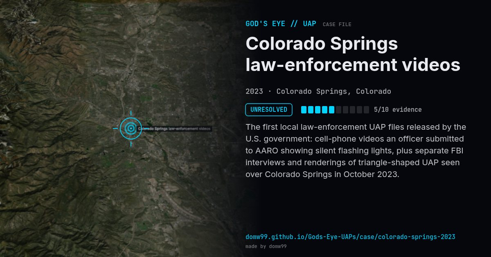

Colorado Springs law-enforcement videos
UNRESOLVED

The first local law-enforcement UAP files released by the U.S. government: cell-phone videos an officer submitted to AARO showing silent flashing lights, plus separate FBI interviews and renderings of triangle-shaped UAP seen over Colorado Springs in October 2023.
Explanation
Released by AARO/PURSUE as unresolved reports from a local law-enforcement officer; no determination published.
What was seen
Shape: Silent lights flashing red, blue and green; triangle reports
Witnesses: Local police officer; former DoW employee (FBI interview)
Duration: Oct 2023 – Jan 2024
Sources
- DVIDS — LLE-UAP-PR002, Unresolved UAP report, Colorado, October 2023
- Denver7 — New government UFO files include Colorado Springs sightings
Browse
- United States
- 2020s
- Unresolved
- Photo and video cases
- Official government documents
- Police witnesses
- Video footage
- Lights and fireballs
- Triangles and V shapes